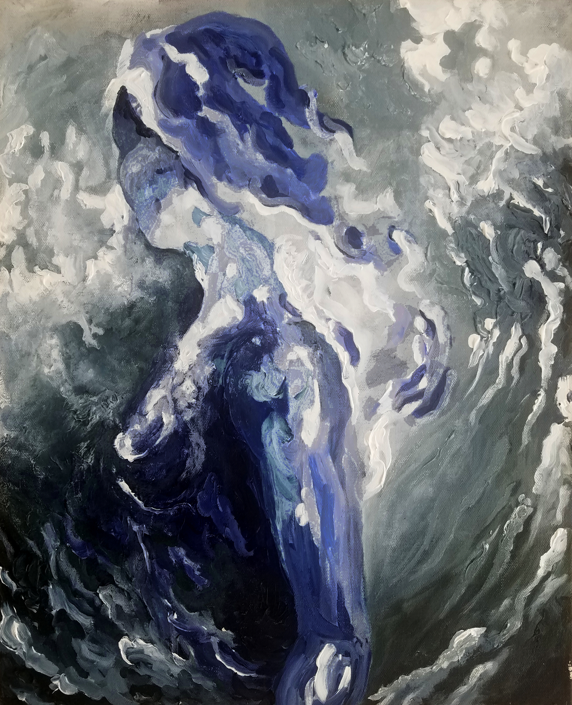
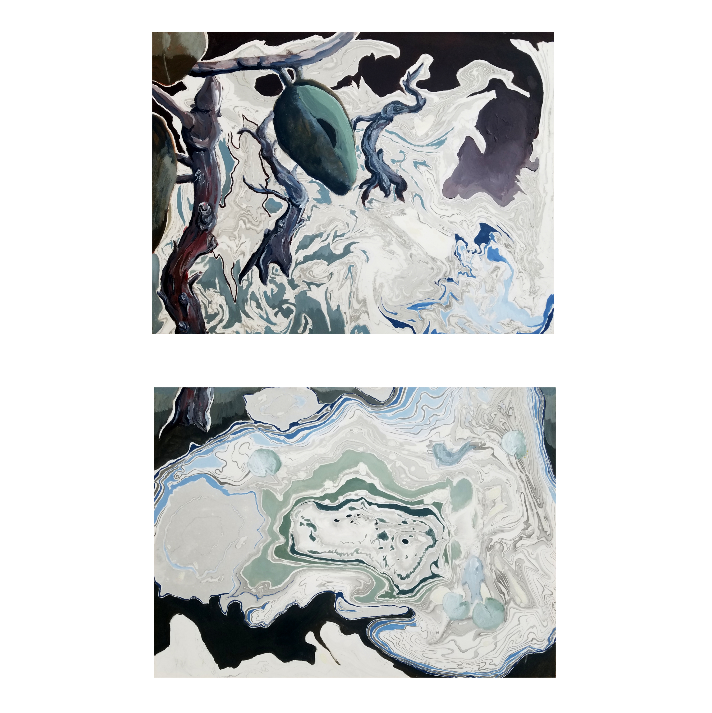

The Poet
20" x 24", Acrylic on canvas and pressed flowers, 2016
View Image

Woman in Blue
16" x 20", Acrylic on canvas, 2017
View Image

The Island
32" x 15", Acrylic and ink on paper, 2017
View Image

Portrait in Blue
19" x 25", Cotton, 2018
View Image

Sactuary
20" x 24", Acrylic on canvas, 2016
View Image